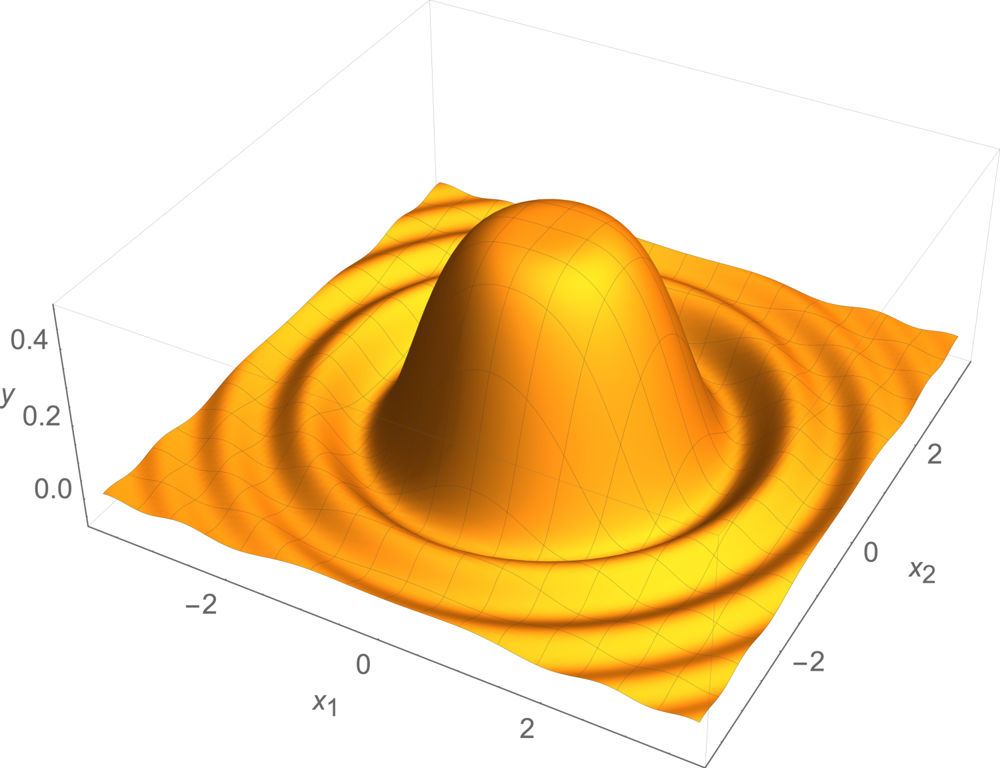
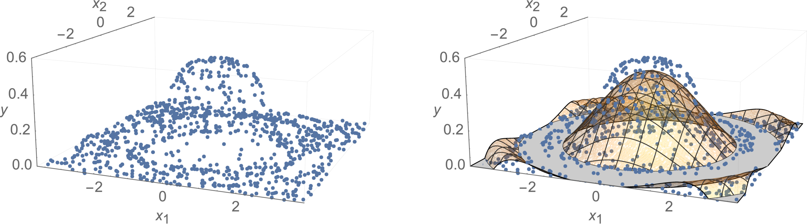
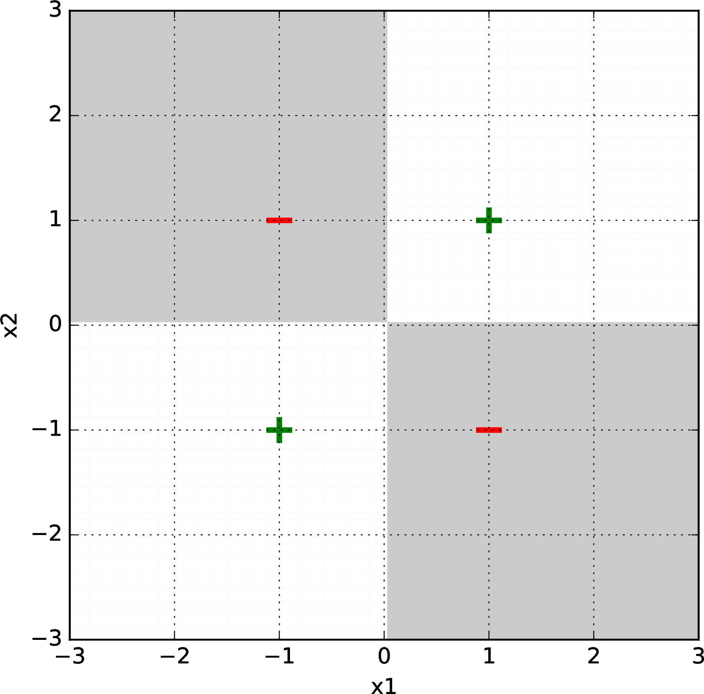
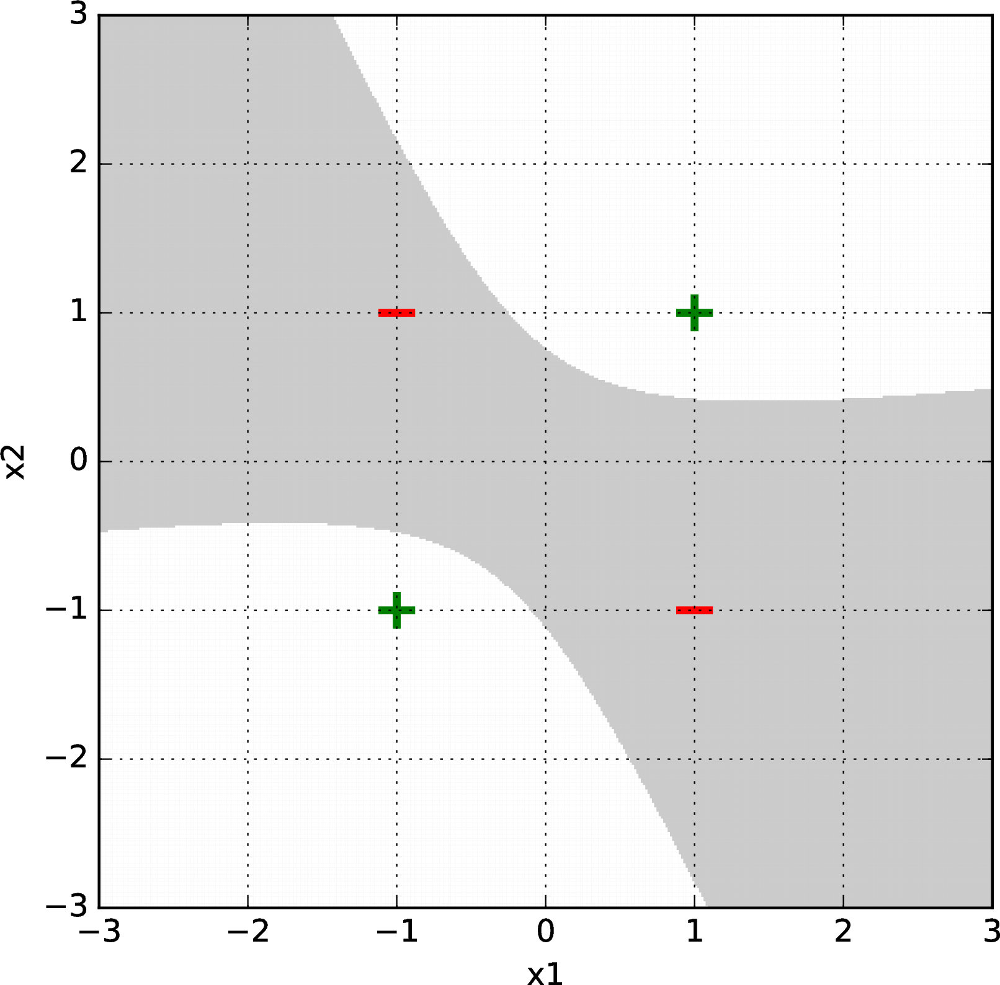
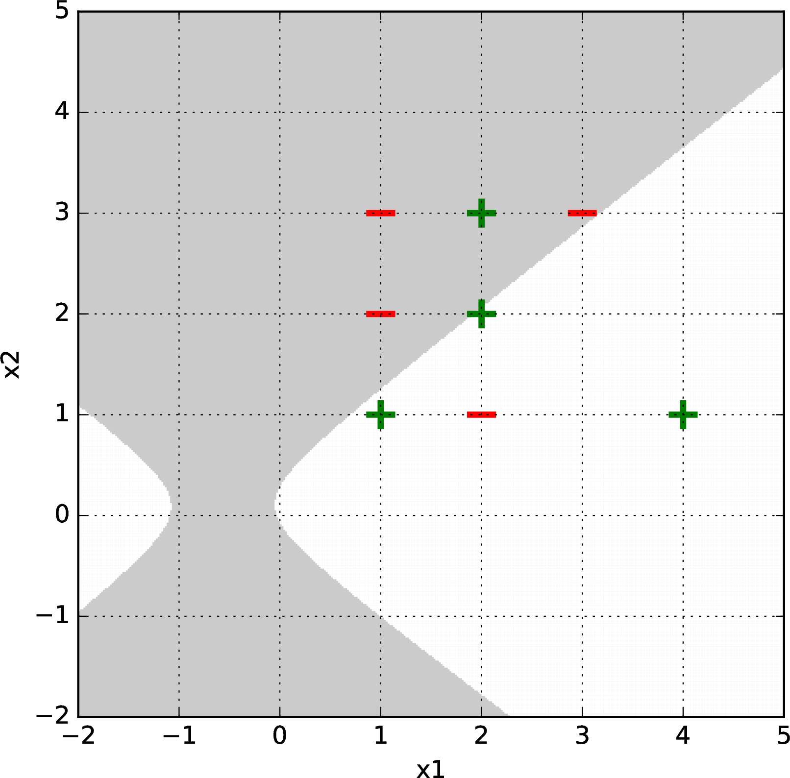
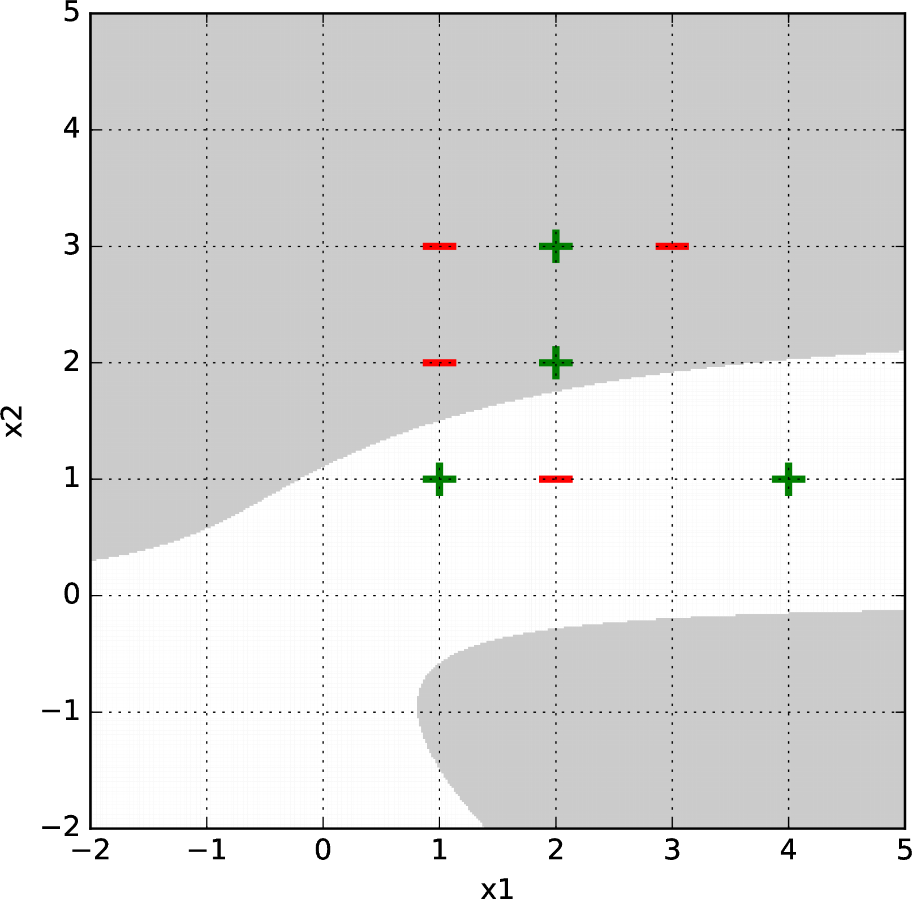
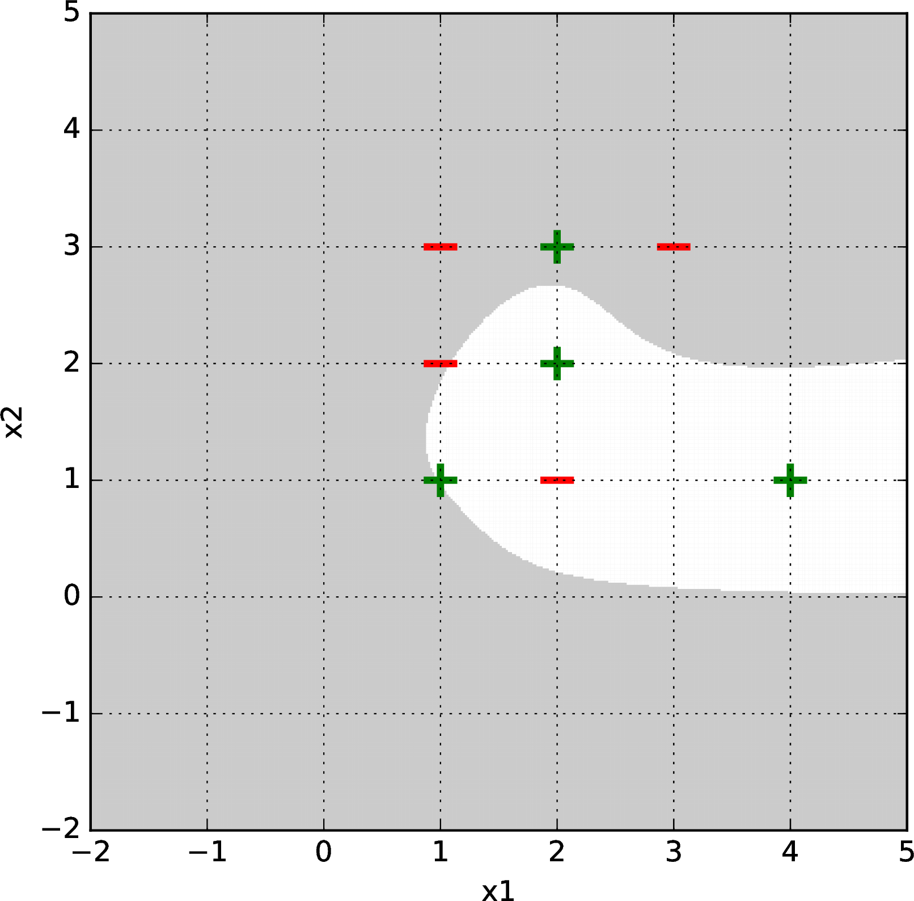
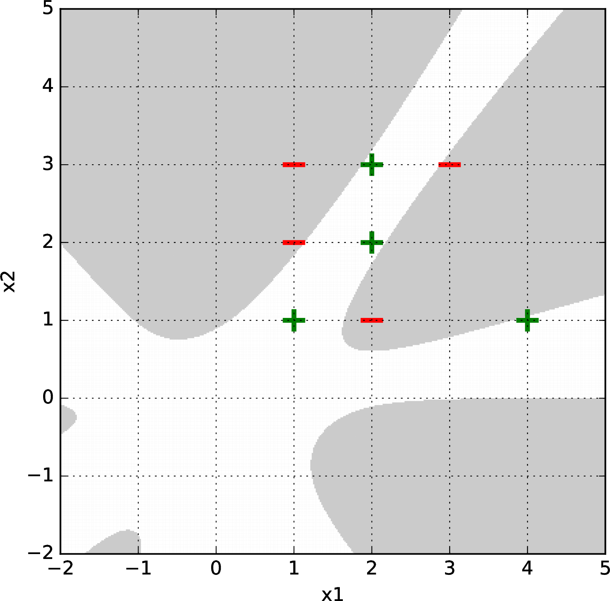

MIT 6.390 Intro to Machine Learning: 5 Feature Representation (Repost)
Reposted from Chapter 5: Feature Representation of the MIT 6.390 Intro to Machine Learning course notes, © Massachusetts Institute of Technology and the 6.390 (formerly 6.036) course staff, licensed under CC BY-NC-SA 4.0. Changes made on 2026-11-20: converted from the course website to Markdown; side notes and boxed notes shown as quotes; links to other chapters point to the original site. This post is shared under the same license.
Linear regression and classification are powerful tools, but in the real world, data often exhibit non-linear behavior that cannot immediately be captured by the linear models which we have built so far. For example, suppose the true behavior of a system (with \(d=2\)) looks like this wavelet:

Such behavior is actually ubiquitous in physical systems, e.g., in the vibrations of the surface of a drum, or scattering of light through an aperture. However, no single hyperplane would be a very good fit to such peaked responses!
A richer class of hypotheses can be obtained by performing a non-linear feature transformation \(\phi(x)\) before doing the regression. That is, \(\theta^Tx + \theta_0\) is a linear function of \(x\), but \(\theta^T\phi(x) + \theta_0\) is a non-linear function of \(x,\) if \(\phi\) is a non-linear function of \(x\).
There are many different ways to construct \(\phi\). Some are relatively systematic and domain independent. Others are directly related to the semantics (meaning) of the original features, and we construct them deliberately with our application (goal) in mind.
5.1 Gaining intuition about feature transformations
In this section, we explore the effects of non-linear feature transformations on simple classification problems, to gain intuition.
Let’s look at an example data set that starts in 1-D:
Example

These points are not linearly separable, but consider the transformation \(\phi(x) = [x,x^2]^T\). Plotting this transformed data (in two-dimensional space, since there are now two features), we see that it is now separable. There are lots of possible separators; we have just shown one of them here.
Example

A linear separator in \(\phi\) space is a non-linear separator in the original space! Let’s see how this plays out in our simple example. Consider the separator \(x^2 - 1 = 0\) (which corresponds to \(\theta = [0,1]^T\) and \(\theta_0 = -1\) in our transformed space), which labels the half-plane \(x^2 -1 > 0\) as positive. What separator does it correspond to in the original 1-D space? We have to ask the question: which \(x\) values have the property that \(x^2 - 1 = 0\). The answer is \(+1\) and \(-1\), so those two points constitute our separator, back in the original space. Similarly, by evaluating where \(x^2 - 1 > 0\) and where \(x^2 - 1 < 0\), we can find the regions of 1D space that are labeled positive and negative (respectively) by this separator.
Example

5.2 Systematic feature construction
Here are two different ways to systematically construct features in a problem independent way.
5.2.1 Polynomial basis
If the features in your problem are already naturally numerical, one systematic strategy for constructing a new feature space is to use a polynomial basis. The idea is that, if you are using the \(k\)th-order basis (where \(k\) is a positive integer), you include a feature for every possible product of \(k\) different dimensions in your original input.
Here is a table illustrating the \(k\)th order polynomial basis for different values of \(k\), calling out the cases when \(d=1\) and \(d>1\):
| Order | \(d=1\) | in general (\(d>1\)) |
|---|---|---|
| 0 | \([1]\) | \([1]\) |
| 1 | \([1,x]^T\) | \([1,x_1, \ldots, x_d]^T\) |
| 2 | \([1,x,x^2]^T\) | \([1,x_1, \ldots, x_d, x_1^2, x_1x_2, \ldots]^T\) |
| 3 | \([1,x,x^2,x^3]^T\) | \([1,x_1, \ldots, x_d, x_1^2, x_1x_2, \ldots, x_1^3, x_1x_2^2, x_1x_2x_3, \ldots]^T\) |
| ⋮ | ⋮ | ⋮ |
This transformation can be used in combination with linear regression or logistic regression (or any other regression or classification model). When we’re using a linear regression or classification model, the key insight is that a linear regressor or separator in the transformed space is a non-linear regressor or separator in the original space.
To give a regression example, the wavelet pictured at the start of this chapter can be fit much better using a polynomial feature representation up to order \(k=8\), compared to just using a simple hyperplane in the original (single-dimensional) feature space:

The raw data (with \(n=1000\) random samples) is plotted on the left, and the regression result (curved surface) is on the right.
Now let’s look at a classification example and see how polynomial feature transformation may help us.
One well-known example is the “exclusive or” (xor) data set, the drosophila of machine-learning data sets:
D. Melanogaster is a species of fruit fly, used as a simple system in which to study genetics, since 1910.
Example

Clearly, this data set is not linearly separable. So, what if we try to solve the xor classification problem using a polynomial basis as the feature transformation? We can just take our two-dimensional data and transform it into a higher-dimensional data set, by applying some feature transformation \(\phi\). Now, we have a classification problem as usual.
Let’s try it for \(k = 2\) on our xor problem. The feature transformation is \[ \phi([x_1, x_2]^T) = [1, x_1, x_2, x_1^2, x_1 x_2, x_2^2]^T\;\;. \]
Study Question: If we train a classifier after performing this feature transformation, would we lose any expressive power if we let \(\theta_0 = 0\) (i.e., trained without offset instead of with offset)?
We might run a classification learning algorithm and find a separator with coefficients \(\theta = [0, 0, 0, 0, 4, 0]^T\) and \(\theta_0 = 0\). This corresponds to \[0 + 0 x_1 + 0 x_2 + 0 x_1^2 + 4 x_1 x_2 + 0 x_2^2 + 0 = 0\] and is plotted below, with the gray shaded region classified as negative and the white region classified as positive:
Example

Study Question: Be sure you understand why this high-dimensional hyperplane is a separator, and how it corresponds to the figure.
For fun, we show some more plots below. Here is another result for a linear classifier on xor generated with logistic regression and gradient descent, using a random initial starting point and second-order polynomial basis:
Example

Here is a harder data set. Logistic regression with gradient descent failed to separate it with a second, third, or fourth-order basis feature representation, but succeeded with a fifth-order basis. Shown below are some results after \(\sim1000\) gradient descent iterations (from random starting points) for bases of order 2 (upper left), 3 (upper right), 4 (lower left), and 5 (lower right).
Example




Study Question: Percy Eptron has a domain with four numeric input features, \((x_1, \ldots, x_4)\). He decides to use a representation of the form \[\phi(x) = {\rm PolyBasis}((x_1, x_2), 3) ^\frown {\rm PolyBasis}((x_3, x_4), 3)\] where \(a^\frown b\) means the vector \(a\) concatenated with the vector \(b\).
What is the dimension of Percy’s representation? Under what assumptions about the original features is this a reasonable choice?
5.2.2 (Optional) Radial basis functions
Another cool idea is to use the training data itself to construct a feature space. The idea works as follows. For any particular point \(p\) in the input space \(\mathcal{X}\), we can construct a feature \(f_p\) which takes any element \(x \in \mathcal{X}\) and returns a scalar value that is related to how far \(x\) is from the \(p\) we started with.
Let’s start with the basic case, in which \(\mathcal{X} = \mathbb{R}^d\). Then we can define \[f_p(x) = e^{-\beta\left\lVert p - x\right\rVert^2}\;\;.\] This function is maximized when \(p = x\) and decreases exponentially as \(x\) becomes more distant from \(p\).
The parameter \(\beta\) governs how quickly the feature value decays as we move away from the center point \(p\). For large values of \(\beta\), the \(f_p\) values are nearly 0 almost everywhere except right near \(p\); for small values of \(\beta\), the features have a high value over a larger part of the space.
Now, given a dataset \({\cal D}\) containing \(n\) points, we can make a feature transformation \(\phi\) that maps points in our original space, \(\mathbb{R}^d\), into points in a new space, \(\mathbb{R}^n\). It is defined as follows: \[\phi(x) = [f_{x^{(1)}}(x), f_{x^{(2)}}(x), \ldots, f_{x^{(n)}}(x)]^T\;\;.\] So, we represent a new datapoint \(x\) in terms of how far it is from each of the datapoints in our training set.
This idea can be generalized in several ways and is the fundamental concept underlying kernel methods, that are not directly covered in this class but we recommend you read about sometime. This idea of describing objects in terms of their similarity to a set of reference objects is very powerful and can be applied to cases where \(\mathcal{X}\) is not a simple vector space, but where the inputs are graphs or strings or other types of objects, as long as there is a distance metric defined on the input space.
5.3 Hand-constructing features for real domains
In many machine-learning applications, we are given descriptions of the inputs with many different types of attributes, including numbers, words, and discrete features. An important factor in the success of an ML application is the way that the features are chosen to be encoded by the human who is framing the learning problem.
5.3.1 Discrete features
Getting a good encoding of discrete features is particularly important. You want to create “opportunities” for the ML system to find the underlying patterns. Although there are machine-learning methods that have special mechanisms for handling discrete inputs, most of the methods we consider in this class will assume the input vectors \(x\) are in \(\mathbb{R}^d\). So, we have to figure out some reasonable strategies for turning discrete values into (vectors of) real numbers.
We’ll start by listing some encoding strategies, and then work through some examples. Let’s assume we have some feature in our raw data that can take on one of \(k\) discrete values.
Numeric: Assign each of these values a number, say \(1.0/k, 2.0/k, \ldots, 1.0\). We might want to then do some further processing, as described in Section Section 5.3.3. This is a sensible strategy only when the discrete values really do signify some sort of numeric quantity, so that these numerical values are meaningful.
Factored code: If your discrete values can sensibly be decomposed into two parts (say the “maker” and “model” of a car), then it’s best to treat those as two separate features, and choose an appropriate encoding of each one from this list.
One-hot code: If there is no obvious numeric or factored structure, then the best strategy is to use a vector of length \(k\), where we convert discrete input value \(0 < j \leq k\) into a vector in which all values are \(0\), except for the \(j\)th, which is \(1\).
As an example, imagine that we want to encode blood types, that are drawn from the set \(\{A+, A-, B+, B-, AB+, AB-, O+, O-\}\). There is no obvious linear numeric scaling or even ordering to this set. But there is a reasonable factoring, into two features: \(\{A, B, AB, O\}\) and \(\{+, -\}\). And, in fact, we can further reasonably factor the first group into \(\{A, {\rm not}A\}\), \(\{B, {\rm not}B\}\). So, here are two plausible encodings of the whole set:
Use a 6-D vector, with two components of the vector each encoding the corresponding factor using a one-hot encoding.
Use a 3-D vector, with one dimension for each factor, encoding its presence as \(1\) and absence as \(-1\) (this is sometimes better than \(0\)). In this case, \(AB+\) would be \([1, 1, 1]^T\) and \(O-\) would be \([-1, -1, -1]^T\).
Study Question: How would you encode \(A+\) in both of these approaches?
5.3.2 Text
The problem of taking a text (such as a tweet or a product review, or even this document!) and encoding it as an input for a machine-learning algorithm is interesting and complicated. Much later in the class, we’ll study sequential input models, where, rather than having to encode a text as a fixed-length feature vector, we feed it into a hypothesis word by word (or even character by character!).
There are some simple encodings that work well for basic applications. One of them is the bag of words (bow) model, which can be used to encode documents. The idea is to let \(d\) be the number of words in our vocabulary (either computed from the training set or some other body of text or dictionary). We will then make a binary vector (with values \(1\) and \(0\)) of length \(d\), where element \(j\) has value \(1\) if word \(j\) occurs in the document, and \(0\) otherwise.
5.3.3 Numeric values
If some feature is already encoded as a numeric value (heart rate, stock price, distance, etc.) then we should generally keep it as a numeric value. An exception might be a situation in which we know there are natural “breakpoints” in the semantics: for example, encoding someone’s age in the US, we might make an explicit distinction between under and over 18 (or 21), depending on what kind of thing we are trying to predict. It might make sense to divide into discrete bins (possibly spacing them closer together for the very young) and to use a one-hot encoding for some sorts of medical situations in which we don’t expect a linear (or even monotonic) relationship between age and some physiological features.
Study Question: Consider using a polynomial basis of order \(k\) as a feature transformation \(\phi\) on our data. Would increasing \(k\) tend to increase or decrease structural error? What about estimation error?
5.4 Final remarks
Throughout this chapter, we have treated the feature representation \(\phi(x)\) as a fixed pre-processing step that we choose manually to enable linear models to capture non-linear patterns. In the next chapter, we will see that neural networks take this a step further: rather than requiring us to specify \(\phi(x)\), they learn a suitable feature representation directly from data. By composing multiple layers of non-linear functions, neural networks can, under some technical conditions, approximate virtually any continuous function. This is a result known as the Universal Approximation Theorem (Cybenko, 1989; Hornik, 1991), which we will not cover in detail in this course but which offers useful insights into why neural networks are so expressive.